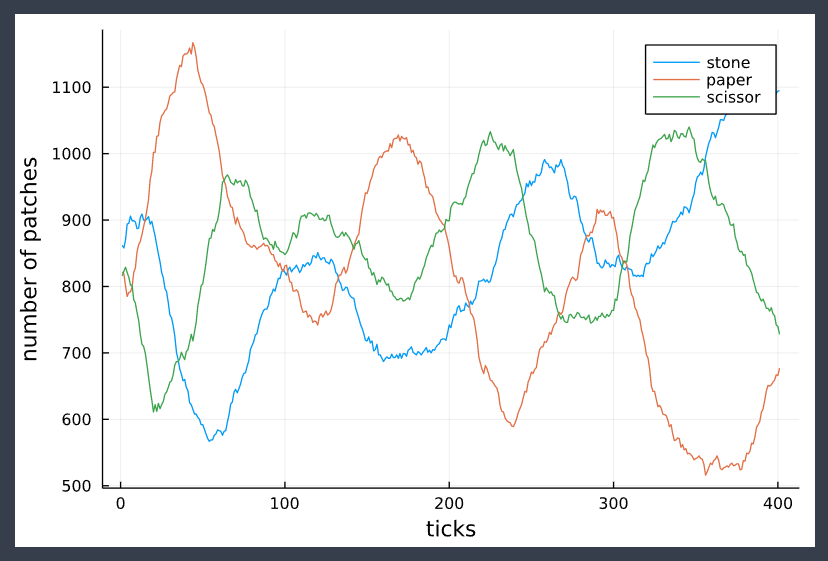

Rock Paper Scissor
using EasyABMStep 1: Create Model
In this model, we work with patches instead of agents. We set grid_size to (50,50), set space_type to Periodic and define an additional model parameter threshold whose value is set to 3.
model = create_2d_model(size = (50,50), space_type = Periodic, threshold = 3)Step 2: Initialise the model
In the second step we initialise the patches by defining initialiser! function and sending it as an argument to init_model!. In the initialiser! function we randomly assign cl"red" (for stone), cl"green" (for paper) and cl"blue" (for scissor) color to patches. Then we initialise the model using init_model! function, in which through the argument props_to_record, we tell EasyABM to record the :color property of patches during time evolution. Note that, in EasyABM animations are created with the recorded data, therefore if in the present model, the color of patches is not recorded there will be no animation to see.
function initialiser!(model)
for j in 1:model.size[2]
for i in 1:model.size[1]
num = rand()
if num<0.33
model.patches[i,j].color = cl"red" # stone => red, paper => green, scissor => blue
elseif num>0.66
model.patches[i,j].color = cl"green"
else
model.patches[i,j].color = cl"blue"
end
end
end
end
init_model!(model, initialiser = initialiser!, props_to_record = Dict("patches" => Set([:color])))Step 3: Defining the step_rule! and running the model
In this step we define the step_rule! function and run the model for 400 steps. The rule of the game is very simple. The cl"red" color of a patch will change to cl"green" if number of neighboring patches with color cl"green" exceeds the threshold( which we set to be 3 in the beginning). Similarly, if a cl"green" patch finds larger than the threshold number of cl"blue" patches in its neighborhood, it will change to cl"blue", and if a cl"blue" patch finds larger than threshold number of cl"red" patches in its neighborhood it will change to cl"red". Each step of the model consists of 500 Monte-Carlo steps in which a patch is selected at random and the above mentioned rule applied to it.
const who_wins_against = Dict(cl"red" => cl"green", cl"green" => cl"blue", cl"blue" => cl"red")
function step_rule!(model)
for _ in 1:500
i = rand(1:model.size[1])
j = rand(1:model.size[2])
nbr_patches = neighbor_patches_moore((i,j), model, 1)
col = model.patches[i,j].color
winner_col = who_wins_against[col]
count = 0
for patch in nbr_patches
if model.patches[patch...].color == winner_col
count+=1
end
end
if count > model.properties.threshold
model.patches[i,j].color = winner_col
end
end
end
run_model!(model, steps = 400, step_rule = step_rule!)Step 4: Visualisation
In order to draw the model at a specific frame, say 4th, one can use draw_frame(model, frame = 4, show_patches=true). If one wants to see the animation of the model run, it can be done as
animate_sim(model, show_patches=true) #since there are only patches and no agents, show_patches must be true for the animationAfter defining the step_rule! function we can also choose to create an interactive application (which currently works in Jupyter with WebIO installation) as shown below. It is recommended to define a fresh model and not initialise it with init_model! or run with run_model! before creating interactive app.
model = create_2d_model(size = (50,50), space_type = Periodic, threshold = 3)
create_interactive_app(model, initialiser= initialiser!,
props_to_record = Dict("patches" => Set([:color])),
step_rule= step_rule!,
model_controls=[(:threshold, "slider", 1:8)],
frames=400, show_patches=true) 
Step 5: Fetch Data
It is easy to fetch any recorded data after running the model. For example, the numbers of different colored patches at all timesteps can be got as follows
df = get_nums_patches(model,
patch-> patch.color ==cl"red",
patch-> patch.color ==cl"green",
patch-> patch.color ==cl"blue", labels=["rock","paper","scissor"], plot_result=true)
References
1.) https://twotwelve.uk/blog/rock-paper-scissors/